Los elementos dramáticos , melodramáticos incluso , de la vida son pasablemente intemporales y ubicuos ; los factores cómicos dependen de convenciones , etiquetas y otras minucias sociales.

Un poema amoroso o un lamento fúnebre nos conmueven aunque nada sepamos de la sociedad en la que vive o vivió su autor ; pero un chiste del país vecino o de hace diez años puede resultarnos impenetrable.
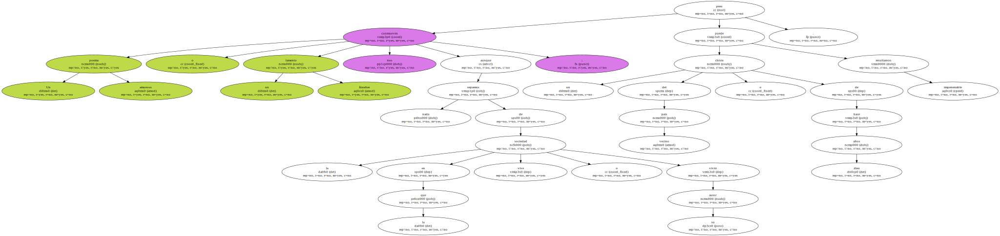Asistimos a una representación moderna de ZZNF , de ZZNM , de ZZNM con una emoción que en nada imaginamos inferior ( todo lo contrario ! ) a la de los primeros espectadores de esas piezas terribles ; pero necesitamos que se adapten a nuestros presentes gobernantes o costumbres las puyas de ZZNM o ZZNM , las parodias de ZZNM o ZZNM.
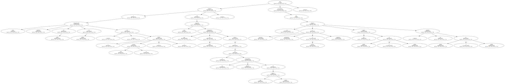La risa es más circunstanciada y puntual que el miedo o la compasión ; la sensibilidad que vibra con lo cómico ha evolucionado más que la que padece ante lo dramático.
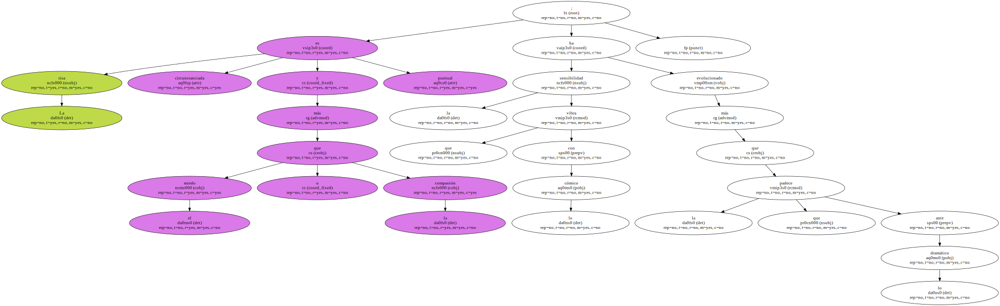En su día , ZZTO debió ser un libro desternillante , capaz de hacer saltar lágrimas de risa a gentes con menos remilgos y mejor estómago que nosotros.
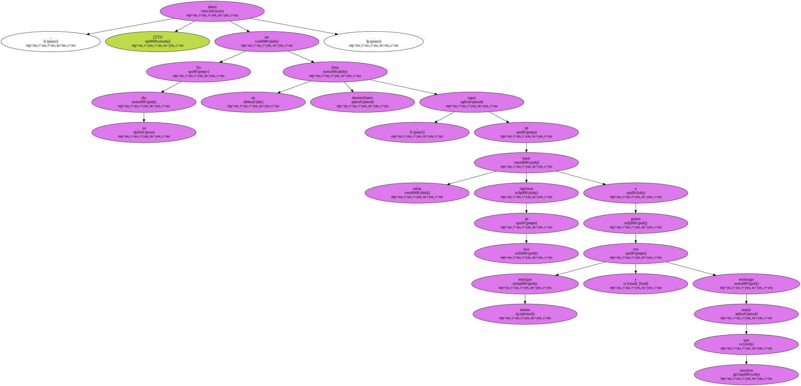Dentro de la propia novela los personajes suelen correrse grandes juergas a costa de los sufrimientos de ZZNM , y cierto rey ZZT , como si desde una ventana de palacio viera a un estudiante riendo a carcajadas con un libro en las manos , comentó a sus próximos : " Ese joven o está loco o lee las aventuras de ZZTO ".
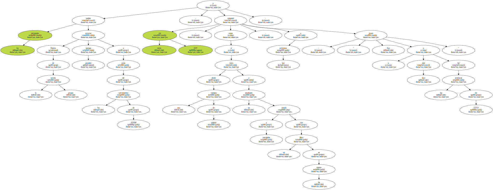En su Autobiografía consigna también ZZNM un recuerdo infantil de su abuelo , puntuando con enormes risotadas la lectura de ZZTO en su lengua original.
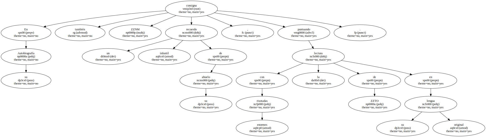Al lector de hoy no le es fácil compartir tan sana hilaridad.
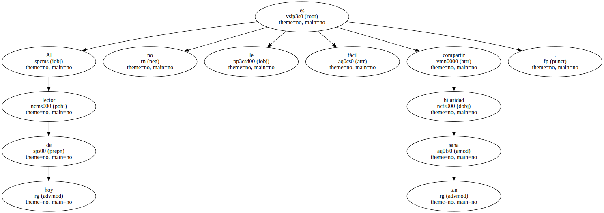Lo más duradero del humor de esta novela , que coincide con el tipo de comicidad más primitiva e invariable , son las escenas de garrotazo y tentetieso , propias del masoquismo melancólico de ZZNM o del sadismo desembozado de ZZNM y ZZNM.
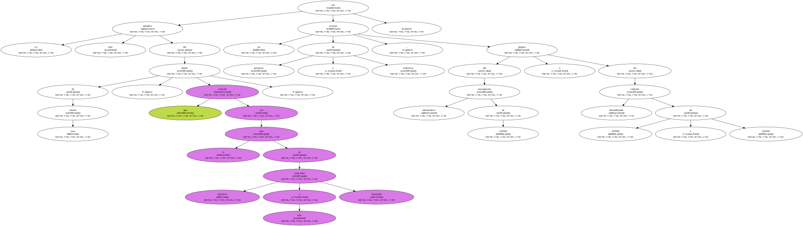ZZNM y ZZNM son con toda minuciosidad molidos a palos , mordiscos , coces , puñetazos , etc ... cada pocas páginas de la novela ; sus palizas tienen algo de onírico , como las de los dibujos animados , y es obvio que por más que les zurren nunca corren auténtico peligro de muerte y después de cada vapuleo van a reanimarse semimilagrosamente.
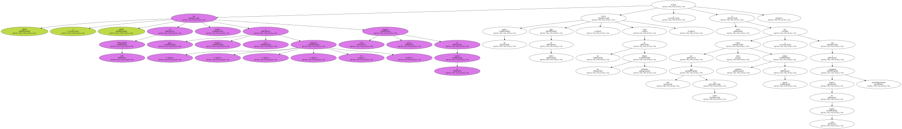Hay que conservar un fondo de espontánea brutalidad infantil para disfrutar a lo largo de tantas páginas de estos veniales linchamientos , y tal fondo suele faltar hoy a los aficionados a la literatura clásica.
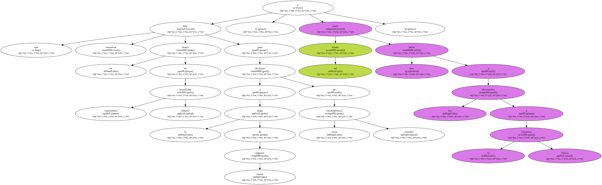Pero las complacencias sádicas de la novela son a menudo aún más refinadas.
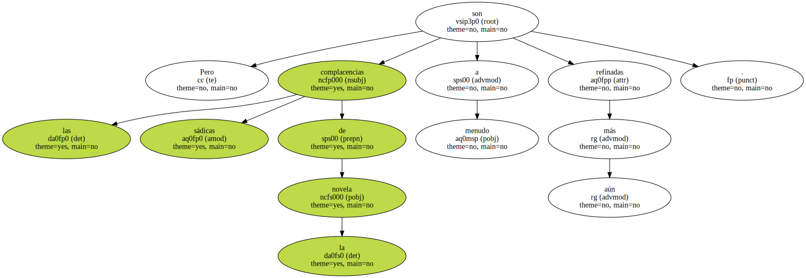Con razón ZZNM , en sus ZZPItres , exclama : " Ambas partes de ZZTO forman una verdadera enciclopedia de la crueldad ".
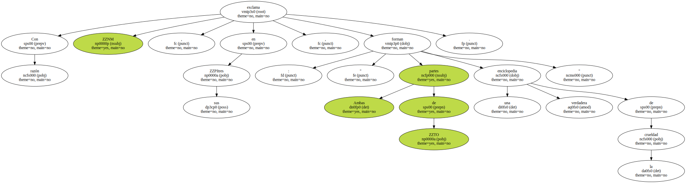